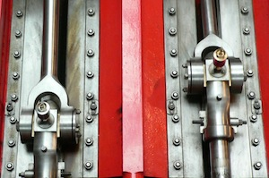

Proposed AEC Structure Guidelines
|

|
Leadership
A team consisting of Matthias Hauswirth, Steve Blackburn, Jan Vitek,
and Shriram Krishnamurthi (with much of the impetus from Matthias) has tried to codify
guidelines that we believe reflect a good practice for structuring AEC
chairs. The goal of these guidelines is to create a process that is
smooth and transfers knowledge across years:
- each AEC is lead by two co-chairs: the incoming co-chair [I] and
the continuing co-chair [C]
- the two co-chairs are joined by an observer [o]
- the two co-chairs [I,C] jointly invite the AEC members and
organize and direct the artifact evaluation effort
- the observer [o] is cc'd on all electronic communication between
the chairs (and other relevant communication) and is expected to use
these messages to absorb the gestalt of the AEC
- at the completion of an AEC:
- the continuing co-chair [C] retires
- the incoming co-chair [I] becomes continuing co-chair [C]
- the observer [o] becomes incoming co-chair [I]
- the new incoming co-chair [I] and continuing co-chair [C] agree on
and jointly invite a new observer [o]
Selection of the observer (and thus future co-chair) should consider
these guidelines:
- each co-chair should be enthusiastic about artifact evaluation, i.e., they
should not be chosen purely for their scientific standing
- each co-chair should be experienced with and engaged in the
process of artifact creation
- preferably, one of the two co-chairs [I,C] should be a “junior”
member of the community, to bring a fresh perspective into the AEC
- preferably, one of the two co-chairs [I,C] should be a “senior”
well-respected member of the community, to boost the stature of the
AEC
- preferably, the two co-chairs [I,C] should be outside each other's
“circle of friends”, to boost representativeness
Additionally, we recommend that program chairs of the associated
conferences consider putting one of the two co-chairs [I, C] on the
PC, possibly with a reduced reviewing load. This enables the co-chair
to participate in the PC process and take notes on the expectations
set by the paper.
Membership
We have been populating the AEC entirely with either PhD students or
very recent graduates (post-docs). We contact a small set of
researchers who we feel represent the standards we wish to
enforce, and ask them to suggest students. Almost all have replied
affirmatively (a handful even offering themselves in addition!). Our
reasoning for using the student population is four-fold:
-
they may be more familiar with the mechanics of modern-day
software tools;
-
they may have more time to conduct detailed experiments with the
artifacts;
-
they might be more responsive to the short deadlines; and,
-
participating in the review process might give them some
perspective on the importance of artifacts, and influence the people
likely to become the next generation of leaders.
In practice, these student-constituted AECs have exceeded even our
high expectations.